Heatmap mit virtueller Matrix und Balkendiagramm mit Farbabbildung erstellen
Heat-Map-Virtual
Zusammenfassung
Dieses Tutorial erstellt zwei Arten von Diagramm, eine Heatmap, basierend auf einer virtuellen Matrix, und ein Balkendiagramm mit Farbabbildung, die dann zusammengefügt werden.
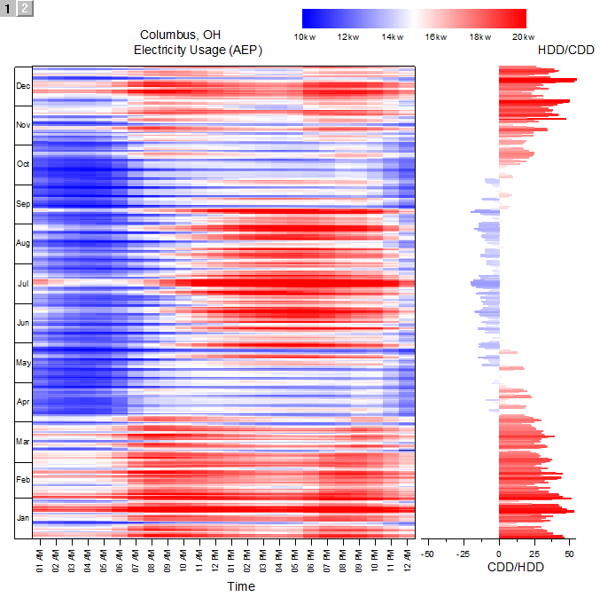
Origin-Version mind. erforderlich: 2015 SR0
Was Sie lernen werden
Dieses Tutorial zeigt Ihnen, wie Sie:
- eine Heatmap, basierend auf einer virtuellen Matrix, erstellen,
- ein Balkendiagramm mit Farbabbildung erstellen,
- die Heatmap und das Balkendiagramm zusammenfügen.
Schritte
Heatmap aus virtueller Matrix erstellen
Dieses Tutorial basiert auf dem Projekt: <Origin-Verzeichnis>\Samples\Tutorial Data.opj.
- Öffnen Sie das Projekt Tutorial Data.opj und navigieren Sie zum Ordner Heatmap and Virtual Matrix Manager. Öffnen Sie die Arbeitsmappe Electricity Usage und aktivieren Sie das erste Blatt.
- Die XYZ-Abbildung der Arbeitsmappe wird in der Grafik unten gezeigt. Dies wird Ihnen dabei helfen zu verstehen, wie die Heatmap in den nächsten Schritten erstellt wird:
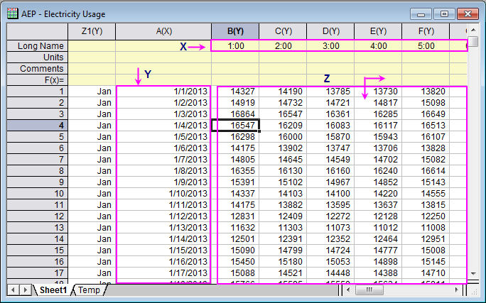
- Markieren Sie alle Zellen im Z-Bereich, indem Sie die Zelle in Spalte (B) - Zeile 1 auswählen. Drücken Sie dann STRG+SHIFT+ENDE. Klicken Sie auf Zeichnen: Kontur: Heatmap im Hauptmenü, um den Dialog plotvm für die Heatmap zu öffnen.
- Die festgelegten XY-Bereiche werden in der Grafik unten gezeigt.
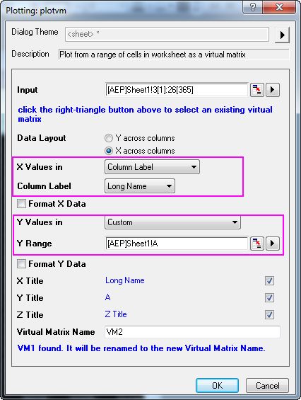
- Aktivieren Sie in diesem Dialog die Kontrollkästchen X-Daten formatieren und Y-Daten formatieren. Klicken Sie jeweils auf die Schaltfläche , um die X- und Y-Daten entsprechend dem untenstehenden Bild zu formatieren. Klicken Sie auf OK, um den Dialog zu schließen:
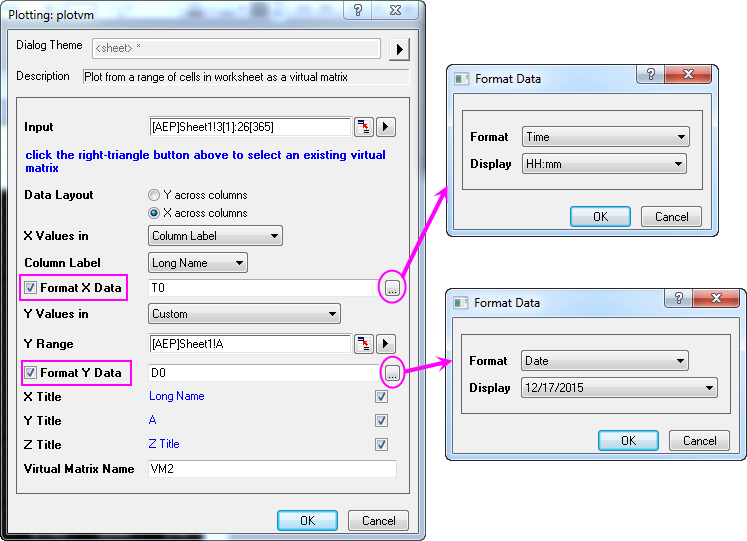
- Die Beschriftungen der Hilfsstriche auf der Y-Achse sind zu dicht, um sie richtig sehen zu können. Dies soll im Folgenden geändert werden. Klicken Sie doppelt auf die Achse im Diagramm, um den Dialog Achsen zu öffnen.
- Wählen Sie das Symbol Links auf der Registerkarte Beschriftung der Hilfsstriche, gehen Sie zur Registerkarte Anzeige, wählen Sie Datum als Typ und setzen Sie die Auswahlliste Anzeige auf Dez (aktueller Monat). Klicken Sie auf Anwenden, um die Einstellung zu speichern.
- 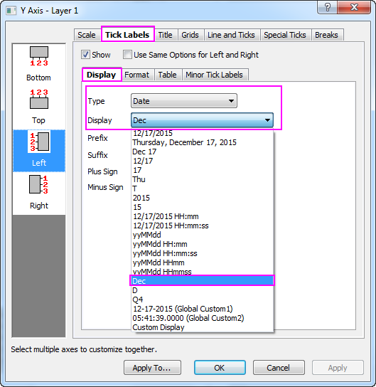
- Gehen Sie zur Registerkarte Tabelle, aktivieren Sie das Kontrollkästchen Aktivieren und klicken Sie zum Speichern auf Anwenden. Sie werden sehen, dass die Namen der Monate als Hilfsstrichsbeschriftungen für die Y-Achse in der Form einer Tabelle gezeigt werden.
- 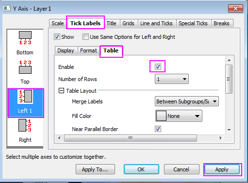
- Als Nächstes legen Sie die Skalierung und die Beschriftung der Hilfsstriche für die X-Achse fest:
- Wählen Sie das Symbol Unten auf der Registerkarte Beschriftung der Hilfsstriche und stellen Sie sicher, dass die Option Zeit als Typ auf der Registerkarte Anzeige festgelegt ist. Ändern Sie die Anzeige in hh pm und klicken Sie auf Anwenden, um die Einstellung zu speichern.
- 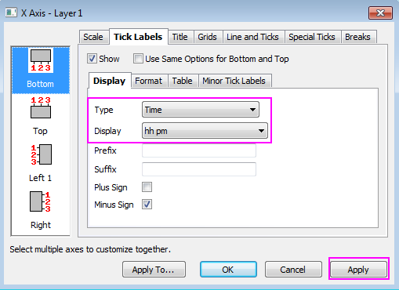
- Wählen Sie das Symbol Horizontal auf der Registerkarte Skalierung, stellen Sie sicher, dass die Einstellungen denjenigen auf der Bild unten entsprechen, und klicken Sie auf Anwenden, um die Einstellung zu speichern. Klicken Sie auf OK, um den Dialog zu schließen. Entfernen Sie den Titel der X-Achse.
- 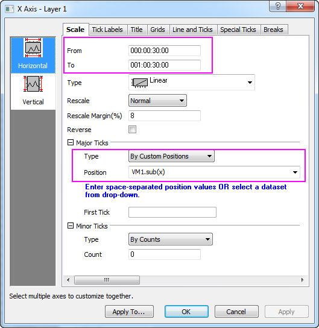
- Klicken Sie auf die Hilfsstrichsbeschriftungen für beide Achsen, X und Y, im Diagramm und ändern Sie die Schriftgröße auf 10 mit Hilfe der Symbolleiste Format.
- Wählen Sie im Hauptmenü Format: Zeichnung bei aktiver Heatmap.
- Legen Sie die Ebenen für die Heatmap entsprechend des folgenden Diagramms fest:
- 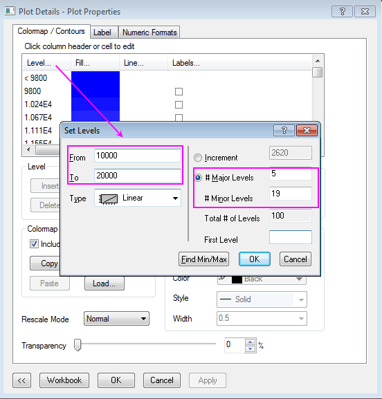
- Bestätigen Sie mit OK, um den Dialog Ebenen festlegen zu schließen.
- Klicken Sie auf die Füllfarbe für die Farbabbildung in der Kopfzelle (blaue Fläche, um die Füllungen gemäß dem folgenden Bild festzulegen:
- 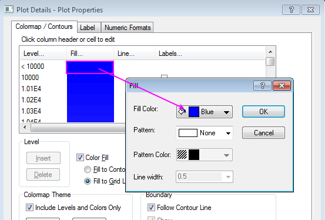
- Scrollen Sie ans Ende der Farbabbildung und setzen Sie die Füllfarbe auf die gleiche Weise auf Rot.
- Klicken Sie auf Speichern auf der Registerkarte Farbpalette/Kontur, um das Muster als heatmap.oth zu speichern. Diese Datei wird im zweiten Teil des Diagramms verwendet.
- 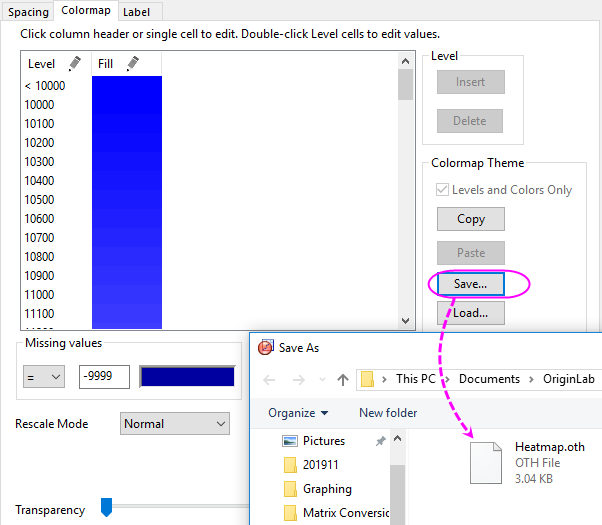
- Klicken Sie im Dialog Details Zeichnung auf den ersten Baumknoten im linken Bedienfeld (standardmäßig Graph1), ändern Sie die Seitengröße in 11*11 Zoll (inch) auf der Registerkarte Drucken/Druckbereich und klicken Sie auf Anwenden. Wählen Sie dann im linken Bedienfeld den Unterknoten für Layer1, gehen Sie zur Registerkarte Größe und Performance, ändern Sie den Layerbereich gemäß dem Bild unten und klicken Sie auf OK, um die Einstellungen anzuwenden und den Dialog zu verlassen:
- 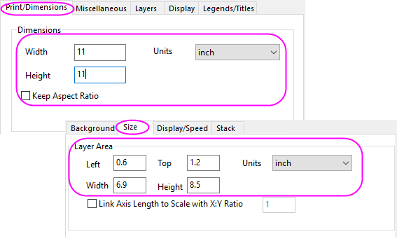
- Sie schalten den Entwurfsmodus aus, indem Sie auf 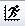 klicken, um das Diagramm mit einer höheren Auflösung anzuzeigen. Das fertige Diagramm für Heatmap sollte dem Bild unten entsprechen:
- 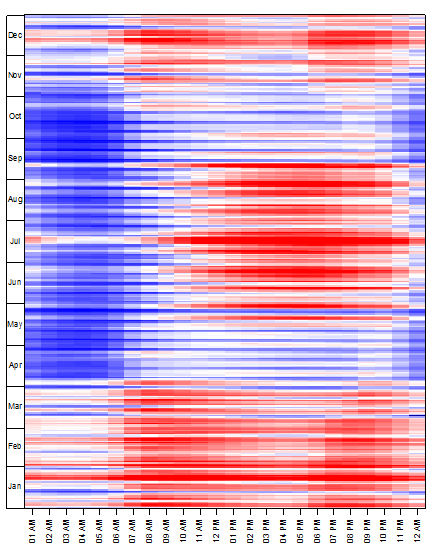
 |
Sobald die virtuellen Matrizen erstellt wurden, können sie intern gespeichert werden. Sie können im Virtuellen Matrixmanager nach ihnen suchen, Die gespeicherte virtuelle Matrix kann direkt für Kontur/Heatmap/3D-Oberfläche verwendet werden. Sie können die virtuelle Matrix über das Eingabefeld des Diagrammdialogs auswählen, wie unten gezeigt:
- 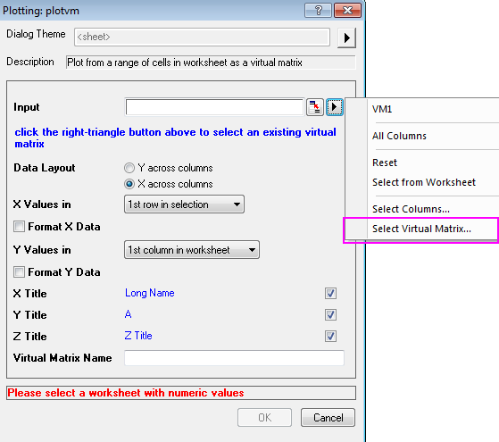
|
Balkendiagramm mit Farbabbildung erstellen
- Gehen Sie zum Blatt Temp in der Arbeitsmappe Electricity Usage, markieren Sie das Arbeitsblatt und wählen Sie Zeichnen: Einfache 2D: Balkendiagramm im Hauptmenü, um ein Balkendiagramm zu erstellen.
- Den Stil der Achsen definieren Sie folgendermaßen:
- Klicken Sie doppelt auf die Achse, um den Dialog Achsen zu öffnen, ändern Sie die Skalierung der Achse (X) bei ausgewähltem Symbol Vertikal auf der Registerkarte Skalierung, wie im Folgenden zu sehen.
- 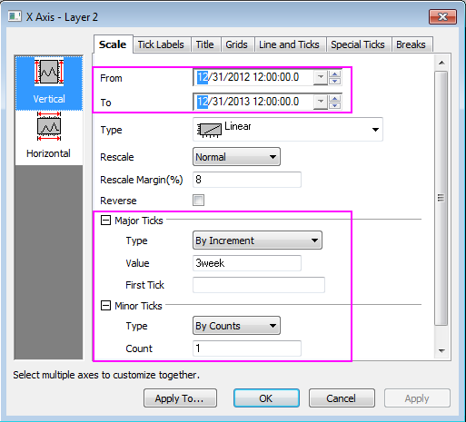
- Ändern Sie dann die Skalierung für die Achse (Y) bei ausgewähltem Symbol Horizontal in die Werte von -55 bis 55 bei einem Wert für die Großen Hilfsstriche von 25 und Kleinen Hilfsstrichen von 1. Klicken Sie dann auf Anwenden.
- 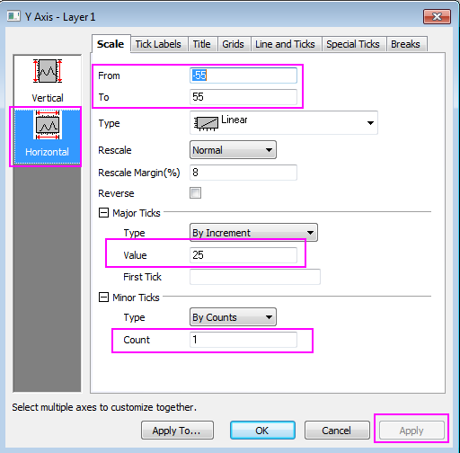
- Die Linie und Hilfsstriche für die X-Achse blenden Sie auf der Registerkarte Linie und Hilfsstriche aus, indem Sie das Kontrollkästchen Linie und Hilfsstriche zeigen deaktivieren. Entsprechend können die Gitternetze auf der Registerkarte Gitternetz ausgeblendet werden.
- Klicken Sie auf OK, um den Dialog zu schließen.
- Ändern Sie den Titel der Y-Achse in CDD/HDD, indem Sie doppelt auf das Objekt des Y-Titels klicken und den direkten Bearbeitungsmodus aktivieren. Löschen Sie die Hilfsstrichsbeschriftungen und den Titel der X-Achse, indem Sie sie markieren und die Taste Entfernen drücken.
- Als Nächstes soll die Farbabbildung für das Diagramm erstellt werden. Das Design der Farbabbildung sollten identisch zu der zuvor erstellten Heatmap sein. Wählen Sie Format: Zeichnung im Hauptmenü, um den Dialog Details Zeichnung zu öffnen.
- Setzen Sie die Farbe für Rand und Füllung auf Map:Col(B).
- 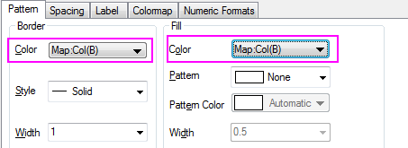
- Gehen Sie zur Registerkarte Farbpalette und laden Sie das Design heatmap.oth.
- 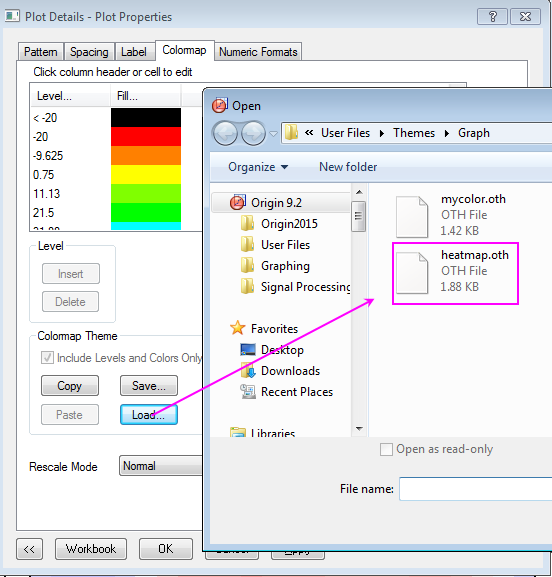
- Klicken Sie auf die Ebene der Farbabbildung, um die Ebenen folgendermaßen festzulegen:
- 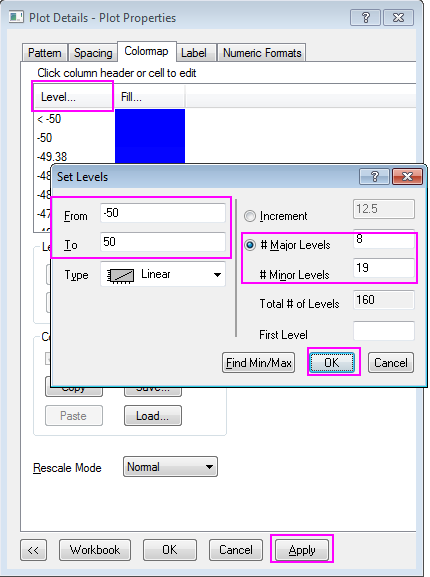
- Klicken Sie auf OK, um den Dialog Ebenen festlegen zu schließen, und klicken Sie auf Anwenden im Dialog Diagrammeigenschaften, um die Einstellungen zu speichern.
- Wählen Sie im linken Bedienfeld den ersten Baumknoten (standardmäßig Graph2), ändern Sie die Seitengröße in 11*11 Zoll (inch) auf der Registerkarte Drucken/Druckbereich, klicken Sie auf Anwenden, wechseln Sie dann zu dem Baumknoten Layer1 und gehen Sie zur Registerkarte Größe und Performance, ändern Sie den Layerbereich gemäß dem Bild unten und klicken Sie auf OK, um den Dialog zu schließen:
- 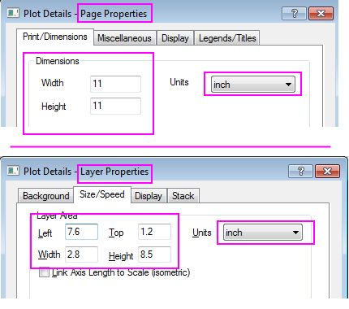
- Das fertige Balkendiagramm sieht in etwa folgendermaßen aus:
- 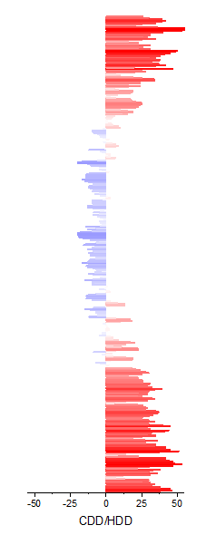
Heatmap und Balkendiagramm zusammenfügen und benutzerdefiniert anpassen
- Wählen Sie Grafik: Grafikfenster zusammenfügen im Hauptmenü bei aktiver Heatmap. Fügen Sie Graph1 und Graph2 zusammen. Das Kontrollkästchen Layout neu ordnen sollte deaktiviert sein. Klicken Sie auf OK, um die Einstellung anzuwenden.
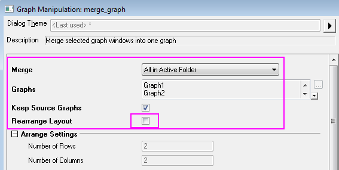 Passen Sie die Größe des zusammengefügten Diagramms (Graph3) an. Klicken Sie auf Format: Seite, gehen Sie zur Registerkarte Drucken/Druckbereich und ändern Sie die Seitengröße in 11*11 Zoll (inch). Klicken Sie auf OK. Drücken Sie Strg+W, um die Diagrammansicht anzupassen.
- Legen Sie den Stil der Farbskala fest:
- Klicken Sie doppelt auf die Farbskala, um den Dialog Eigenschaften Farbskala zu öffnen, und nehmen Sie folgende Einstellungen auf der Seite Ebenen vor:
- 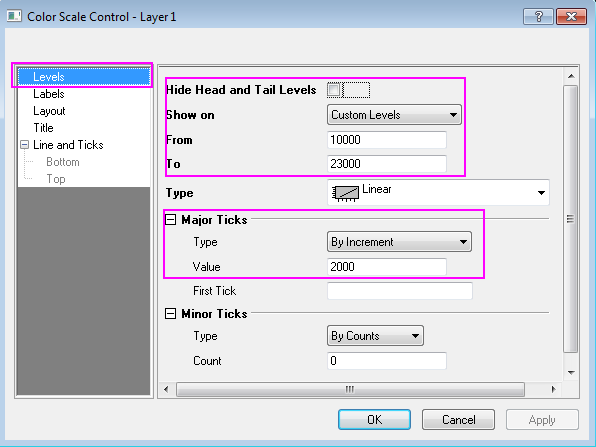
- Legen Sie auf der Seite Beschriftungen folgende Optionen fest:
- 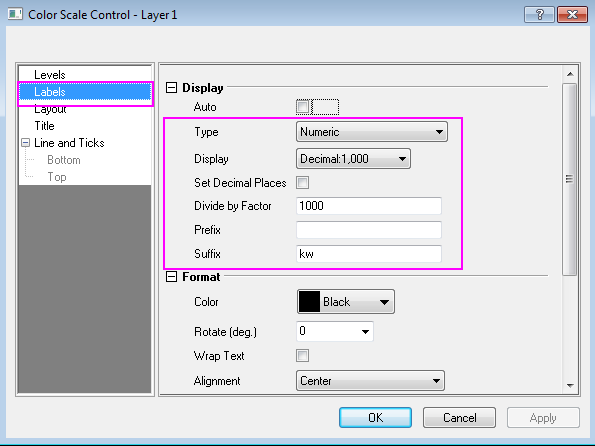
- Legen Sie auf der Seite Layout folgende Optionen fest:
- 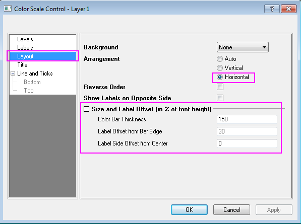
- Klicken Sie auf OK, um die Einstellungen anzuwenden, und ziehen Sie an der Außenlinie der Farbskala im Diagramm, um eine geeignete Größe und Position zu erreichen.
- Markieren Sie unerwünschte Achsentitel oder Legenden und löschen Sie sie. Fügen Sie ein Textobjekt mit Diagramminformationen mit Hilfe des Texthilfsmittels hinzu.
Das fertige Diagramm sieht in etwa folgendermaßen aus: